datetime, and matplotlib intro#
This lesson rounds out the introductory pandas work and introduces our basic plotting library matplotlib.
OBJECTIVES
Understand and use
datetimeobjects in pandas DataFramesUse
matplotlibto produce basic plots from dataUnderstand when to use histograms, boxplots, line plots, and scatterplots with data
import os
import numpy as np
import pandas as pd
import matplotlib.pyplot as plt
import seaborn as sns
datetime#
A special type of data for pandas are entities that can be considered as dates. We can create a special datatype for these using pd.to_datetime, and access the functions of the datetime module as a result.
# read in the AAPL data
url = 'https://raw.githubusercontent.com/jfkoehler/nyu_bootcamp_fa24/refs/heads/main/data/AAPL.csv'
#read_csv
aapl = pd.read_csv(url)
aapl.head()
| Date | Open | High | Low | Close | Adj Close | Volume | |
|---|---|---|---|---|---|---|---|
| 0 | 2005-04-25 | 5.212857 | 5.288571 | 5.158571 | 5.282857 | 3.522625 | 186615100 |
| 1 | 2005-04-26 | 5.254286 | 5.358572 | 5.160000 | 5.170000 | 3.447372 | 202626900 |
| 2 | 2005-04-27 | 5.127143 | 5.194286 | 5.072857 | 5.135714 | 3.424510 | 153472200 |
| 3 | 2005-04-28 | 5.184286 | 5.191429 | 5.034286 | 5.077143 | 3.385454 | 143776500 |
| 4 | 2005-04-29 | 5.164286 | 5.175714 | 5.031428 | 5.151429 | 3.434988 | 167907600 |
#examine info
aapl.info()
<class 'pandas.core.frame.DataFrame'>
RangeIndex: 3523 entries, 0 to 3522
Data columns (total 7 columns):
# Column Non-Null Count Dtype
--- ------ -------------- -----
0 Date 3523 non-null object
1 Open 3523 non-null float64
2 High 3523 non-null float64
3 Low 3523 non-null float64
4 Close 3523 non-null float64
5 Adj Close 3523 non-null float64
6 Volume 3523 non-null int64
dtypes: float64(5), int64(1), object(1)
memory usage: 192.8+ KB
# convert to datetime
aapl['Date'] = pd.to_datetime(aapl['Date'])
aapl.info()
<class 'pandas.core.frame.DataFrame'>
RangeIndex: 3523 entries, 0 to 3522
Data columns (total 7 columns):
# Column Non-Null Count Dtype
--- ------ -------------- -----
0 Date 3523 non-null datetime64[ns]
1 Open 3523 non-null float64
2 High 3523 non-null float64
3 Low 3523 non-null float64
4 Close 3523 non-null float64
5 Adj Close 3523 non-null float64
6 Volume 3523 non-null int64
dtypes: datetime64[ns](1), float64(5), int64(1)
memory usage: 192.8 KB
# extract the month
aapl['Date'].dt.month
0 4
1 4
2 4
3 4
4 4
..
3518 4
3519 4
3520 4
3521 4
3522 4
Name: Date, Length: 3523, dtype: int32
# extract the day
aapl['Date'].dt.day
0 25
1 26
2 27
3 28
4 29
..
3518 16
3519 17
3520 18
3521 22
3522 23
Name: Date, Length: 3523, dtype: int32
# set date to be index of data
aapl.set_index('Date', inplace = True)
---------------------------------------------------------------------------
KeyError Traceback (most recent call last)
/var/folders/8v/7bhy8yqn04b7rzqglb2s38200000gn/T/ipykernel_2944/963803784.py in ?()
1 # set date to be index of data
----> 2 aapl.set_index('Date', inplace = True)
/Library/Frameworks/Python.framework/Versions/3.12/lib/python3.12/site-packages/pandas/core/frame.py in ?(self, keys, drop, append, inplace, verify_integrity)
6118 if not found:
6119 missing.append(col)
6120
6121 if missing:
-> 6122 raise KeyError(f"None of {missing} are in the columns")
6123
6124 if inplace:
6125 frame = self
KeyError: "None of ['Date'] are in the columns"
# sort the index
aapl.sort_index(inplace = True)
#see if things have changed
aapl.info()
<class 'pandas.core.frame.DataFrame'>
DatetimeIndex: 3523 entries, 2005-04-25 to 2019-04-23
Data columns (total 6 columns):
# Column Non-Null Count Dtype
--- ------ -------------- -----
0 Open 3523 non-null float64
1 High 3523 non-null float64
2 Low 3523 non-null float64
3 Close 3523 non-null float64
4 Adj Close 3523 non-null float64
5 Volume 3523 non-null int64
dtypes: float64(5), int64(1)
memory usage: 192.7 KB
# select 2019
aapl.loc['2015':'2019']
| Open | High | Low | Close | Adj Close | Volume | |
|---|---|---|---|---|---|---|
| Date | ||||||
| 2015-01-02 | 111.389999 | 111.440002 | 107.349998 | 109.330002 | 101.528191 | 53204600 |
| 2015-01-05 | 108.290001 | 108.650002 | 105.410004 | 106.250000 | 98.667984 | 64285500 |
| 2015-01-06 | 106.540001 | 107.430000 | 104.629997 | 106.260002 | 98.677261 | 65797100 |
| 2015-01-07 | 107.199997 | 108.199997 | 106.699997 | 107.750000 | 100.060936 | 40105900 |
| 2015-01-08 | 109.230003 | 112.150002 | 108.699997 | 111.889999 | 103.905510 | 59364500 |
| ... | ... | ... | ... | ... | ... | ... |
| 2019-04-16 | 199.460007 | 201.369995 | 198.559998 | 199.250000 | 199.250000 | 25696400 |
| 2019-04-17 | 199.539993 | 203.380005 | 198.610001 | 203.130005 | 203.130005 | 28906800 |
| 2019-04-18 | 203.119995 | 204.149994 | 202.520004 | 203.860001 | 203.860001 | 24195800 |
| 2019-04-22 | 202.830002 | 204.940002 | 202.339996 | 204.529999 | 204.529999 | 19439500 |
| 2019-04-23 | 204.429993 | 207.750000 | 203.899994 | 207.479996 | 207.479996 | 23309000 |
1083 rows × 6 columns
# read back in using parse_dates = True and index_col = 0
aapl = pd.read_csv(url, parse_dates = True, index_col = 0)
aapl.info()
<class 'pandas.core.frame.DataFrame'>
DatetimeIndex: 3523 entries, 2005-04-25 to 2019-04-23
Data columns (total 6 columns):
# Column Non-Null Count Dtype
--- ------ -------------- -----
0 Open 3523 non-null float64
1 High 3523 non-null float64
2 Low 3523 non-null float64
3 Close 3523 non-null float64
4 Adj Close 3523 non-null float64
5 Volume 3523 non-null int64
dtypes: float64(5), int64(1)
memory usage: 192.7 KB
from datetime import datetime
# what time is it?
then = datetime.now()
then
datetime.datetime(2025, 9, 18, 15, 53, 50, 929023)
# how much time has passed?
datetime.now() - then
datetime.timedelta(seconds=35, microseconds=562058)
More with timestamps#
Date times: A specific date and time with timezone support. Similar to datetime.datetime from the standard library.
Time deltas: An absolute time duration. Similar to datetime.timedelta from the standard library.
# create a pd.Timedelta
delta = pd.Timedelta('1W')
# shift a date by 3 months
datetime.now() + delta
datetime.datetime(2025, 9, 25, 15, 55, 29, 94830)
Problems#
ufo_url = 'https://raw.githubusercontent.com/jfkoehler/nyu_bootcamp_fa24/refs/heads/main/data/ufo.csv'
Return to the ufo data and convert the Time column to a datetime object.
ufo_df = pd.read_csv(ufo_url)
ufo_df.head()
| City | Colors Reported | Shape Reported | State | Time | |
|---|---|---|---|---|---|
| 0 | Ithaca | NaN | TRIANGLE | NY | 6/1/1930 22:00 |
| 1 | Willingboro | NaN | OTHER | NJ | 6/30/1930 20:00 |
| 2 | Holyoke | NaN | OVAL | CO | 2/15/1931 14:00 |
| 3 | Abilene | NaN | DISK | KS | 6/1/1931 13:00 |
| 4 | New York Worlds Fair | NaN | LIGHT | NY | 4/18/1933 19:00 |
ufo_df['Time'] = pd.to_datetime(ufo_df['Time'])
Set the Time column as the index column of the data.
ufo_df.set_index('Time', inplace = True)
Sort it
ufo_df.sort_index(inplace = True)
Create a new dataframe with ufo sightings since January 1, 1999
ufo_df.loc['1999':]
| City | Colors Reported | Shape Reported | State | |
|---|---|---|---|---|
| Time | ||||
| 1999-01-01 02:30:00 | Loma Rica | NaN | LIGHT | CA |
| 1999-01-01 03:00:00 | Bauxite | NaN | NaN | AR |
| 1999-01-01 14:00:00 | Florence | NaN | CYLINDER | SC |
| 1999-01-01 15:00:00 | Lake Henshaw | NaN | CIGAR | CA |
| 1999-01-01 17:15:00 | Wilmington Island | NaN | LIGHT | GA |
| ... | ... | ... | ... | ... |
| 2014-09-04 23:20:00 | Neligh | NaN | CIRCLE | NE |
| 2014-09-05 01:14:00 | Uhrichsville | NaN | LIGHT | OH |
| 2014-09-05 02:40:00 | Tucson | RED BLUE | NaN | AZ |
| 2014-09-05 03:43:00 | Orland park | RED | LIGHT | IL |
| 2014-09-05 05:30:00 | Loughman | NaN | LIGHT | FL |
67711 rows × 4 columns
Grouping with Dates#
An operation similar to that of the groupby function can be used with dataframes whose index is a datetime object. This is the resample function, and the groups are essentially a time period like week, month, year, etc.
dow = sns.load_dataset('dowjones')
#check the info
dow.info()
<class 'pandas.core.frame.DataFrame'>
RangeIndex: 649 entries, 0 to 648
Data columns (total 2 columns):
# Column Non-Null Count Dtype
--- ------ -------------- -----
0 Date 649 non-null datetime64[ns]
1 Price 649 non-null float64
dtypes: datetime64[ns](1), float64(1)
memory usage: 10.3 KB
#handle the index
dow.set_index('Date', inplace = True)
#check that things changed
dow.info()
<class 'pandas.core.frame.DataFrame'>
DatetimeIndex: 649 entries, 1914-12-01 to 1968-12-01
Data columns (total 1 columns):
# Column Non-Null Count Dtype
--- ------ -------------- -----
0 Price 649 non-null float64
dtypes: float64(1)
memory usage: 10.1 KB
dow.head()
| Price | |
|---|---|
| Date | |
| 1914-12-01 | 55.00 |
| 1915-01-01 | 56.55 |
| 1915-02-01 | 56.00 |
| 1915-03-01 | 58.30 |
| 1915-04-01 | 66.45 |
#average yearly price
dow.resample('Y').mean()
/var/folders/8v/7bhy8yqn04b7rzqglb2s38200000gn/T/ipykernel_2944/581637822.py:2: FutureWarning: 'Y' is deprecated and will be removed in a future version, please use 'YE' instead.
dow.resample('Y').mean()
| Price | |
|---|---|
| Date | |
| 1914-12-31 | 55.000000 |
| 1915-12-31 | 74.329167 |
| 1916-12-31 | 94.791667 |
| 1917-12-31 | 87.729167 |
| 1918-12-31 | 81.066667 |
| 1919-12-31 | 99.770833 |
| 1920-12-31 | 90.116667 |
| 1921-12-31 | 73.375000 |
| 1922-12-31 | 92.962500 |
| 1923-12-31 | 94.575000 |
| 1924-12-31 | 99.858333 |
| 1925-12-31 | 134.225000 |
| 1926-12-31 | 152.933333 |
| 1927-12-31 | 175.570833 |
| 1928-12-31 | 226.454167 |
| 1929-12-31 | 307.570833 |
| 1930-12-31 | 236.008333 |
| 1931-12-31 | 137.950000 |
| 1932-12-31 | 64.229167 |
| 1933-12-31 | 83.462500 |
| 1934-12-31 | 97.904167 |
| 1935-12-31 | 120.158333 |
| 1936-12-31 | 161.470833 |
| 1937-12-31 | 165.641667 |
| 1938-12-31 | 132.000000 |
| 1939-12-31 | 141.516667 |
| 1940-12-31 | 134.837500 |
| 1941-12-31 | 121.704167 |
| 1942-12-31 | 107.308333 |
| 1943-12-31 | 134.940000 |
| 1944-12-31 | 143.153333 |
| 1945-12-31 | 169.766667 |
| 1946-12-31 | 190.692500 |
| 1947-12-31 | 177.541667 |
| 1948-12-31 | 180.337500 |
| 1949-12-31 | 179.050833 |
| 1950-12-31 | 216.305833 |
| 1951-12-31 | 257.635000 |
| 1952-12-31 | 270.763333 |
| 1953-12-31 | 275.965000 |
| 1954-12-31 | 333.960833 |
| 1955-12-31 | 442.717500 |
| 1956-12-31 | 493.010000 |
| 1957-12-31 | 475.707500 |
| 1958-12-31 | 491.659167 |
| 1959-12-31 | 632.117500 |
| 1960-12-31 | 618.875000 |
| 1961-12-31 | 691.554167 |
| 1962-12-31 | 639.759167 |
| 1963-12-31 | 714.808333 |
| 1964-12-31 | 834.053333 |
| 1965-12-31 | 910.882500 |
| 1966-12-31 | 873.601667 |
| 1967-12-31 | 879.120000 |
| 1968-12-31 | 905.746667 |
#quarterly maximum price
dow.resample('Q').max()
/var/folders/8v/7bhy8yqn04b7rzqglb2s38200000gn/T/ipykernel_2944/2439399997.py:2: FutureWarning: 'Q' is deprecated and will be removed in a future version, please use 'QE' instead.
dow.resample('Q').max()
| Price | |
|---|---|
| Date | |
| 1914-12-31 | 55.00 |
| 1915-03-31 | 58.30 |
| 1915-06-30 | 68.40 |
| 1915-09-30 | 85.50 |
| 1915-12-31 | 97.00 |
| ... | ... |
| 1967-12-31 | 907.54 |
| 1968-03-31 | 884.77 |
| 1968-06-30 | 906.82 |
| 1968-09-30 | 922.80 |
| 1968-12-31 | 965.39 |
217 rows × 1 columns
Introduction to matplotlib#
Now, let us turn our attention to plotting data. We begin with basic plots, and later explore some customization and additional plots. For these exercises, we will use the stock price data and a dataset about antarctic penguins from the seaborn library.
import seaborn as sns
import matplotlib.pyplot as plt
penguins = sns.load_dataset('penguins')
Line Plots with Matplotlib#
To begin, select the bill_length_mm column of the data.
penguins.info()
<class 'pandas.core.frame.DataFrame'>
RangeIndex: 344 entries, 0 to 343
Data columns (total 7 columns):
# Column Non-Null Count Dtype
--- ------ -------------- -----
0 species 344 non-null object
1 island 344 non-null object
2 bill_length_mm 342 non-null float64
3 bill_depth_mm 342 non-null float64
4 flipper_length_mm 342 non-null float64
5 body_mass_g 342 non-null float64
6 sex 333 non-null object
dtypes: float64(4), object(3)
memory usage: 18.9+ KB
### bill length
bill_length = penguins['bill_length_mm']
### plt.plot
plt.plot(bill_length)
[<matplotlib.lines.Line2D at 0x135e471d0>]
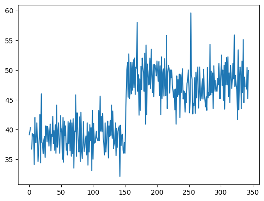
### use the series
bill_length.plot()
<Axes: >
#plot dow jones Price with matplotlib
plt.plot(dow['Price'])
[<matplotlib.lines.Line2D at 0x136016f30>]
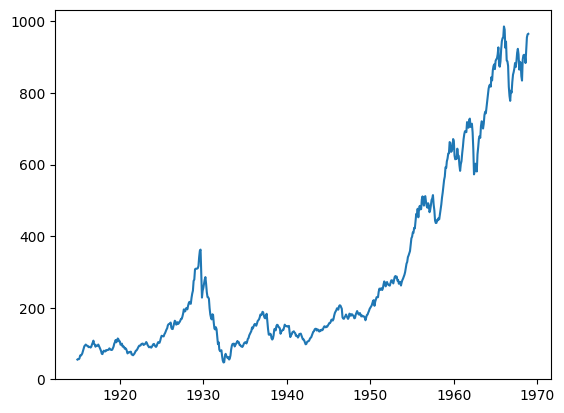
#plot dow jones data from series
dow.plot(figsize = (10, 4))
plt.grid();
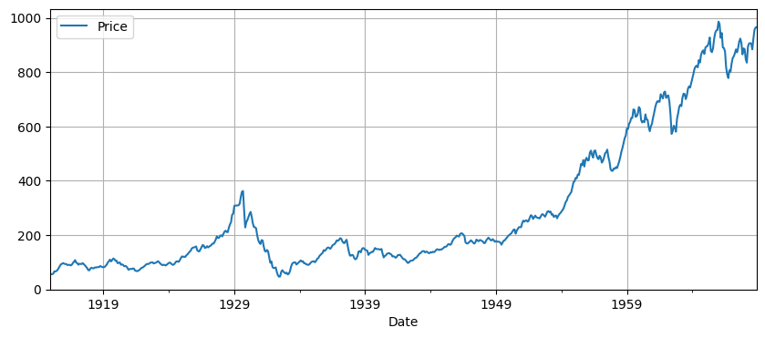
Choosing A Plot#
Below, plots are shown first for single quantiative variables, then single categorical variables. Next, two continuous variables, one continuous vs. one categorical, and any mix of continuous and categorical.
penguins.head()
| species | island | bill_length_mm | bill_depth_mm | flipper_length_mm | body_mass_g | sex | |
|---|---|---|---|---|---|---|---|
| 0 | Adelie | Torgersen | 39.1 | 18.7 | 181.0 | 3750.0 | Male |
| 1 | Adelie | Torgersen | 39.5 | 17.4 | 186.0 | 3800.0 | Female |
| 2 | Adelie | Torgersen | 40.3 | 18.0 | 195.0 | 3250.0 | Female |
| 3 | Adelie | Torgersen | NaN | NaN | NaN | NaN | NaN |
| 4 | Adelie | Torgersen | 36.7 | 19.3 | 193.0 | 3450.0 | Female |
Histogram#
A histogram is an approximate representation of the distribution of numerical data. This is a plot we use for any single continuous feature to better understand the shape of the data.
### bill length histogram
plt.hist(bill_length)
(array([ 9., 40., 57., 48., 49., 55., 61., 16., 5., 2.]),
array([32.1 , 34.85, 37.6 , 40.35, 43.1 , 45.85, 48.6 , 51.35, 54.1 ,
56.85, 59.6 ]),
<BarContainer object of 10 artists>)
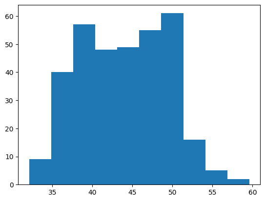
### as a method with the series
bill_length.hist()
plt.title('Bill Length (mm)');
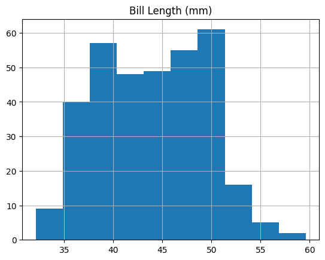
### adjusting the bin number
plt.hist(bill_length, bins = 100);
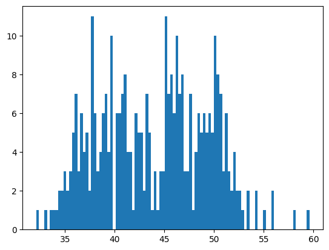
### adding a title, labels, edgecolor, and alpha
plt.hist(bill_length,
edgecolor = 'black',
color = 'red',
alpha = 0.3 )
(array([ 9., 40., 57., 48., 49., 55., 61., 16., 5., 2.]),
array([32.1 , 34.85, 37.6 , 40.35, 43.1 , 45.85, 48.6 , 51.35, 54.1 ,
56.85, 59.6 ]),
<BarContainer object of 10 artists>)
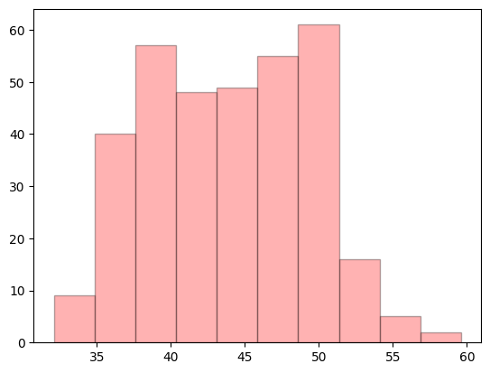
plt.title('Bill Length (mm)');
penguins.hist();
Boxplot#
Similar to a histogram, a boxplot can be used on a single quantitative feature.
### boxplot of bill length
plt.boxplot(bill_length);
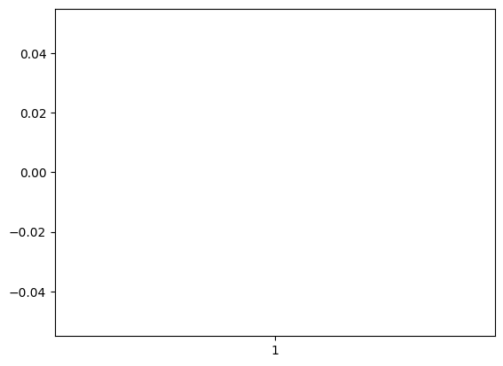
### WHOOPS -- lets try this without null values
plt.boxplot(bill_length.dropna());
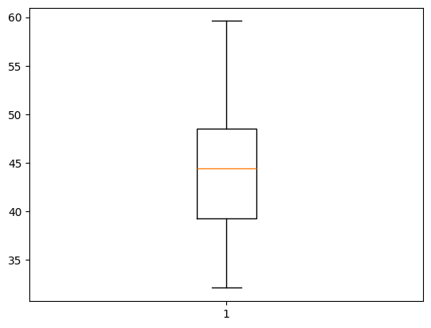
### Make a horizontal version of the plot
plt.boxplot(bill_length.dropna(), vert = False);
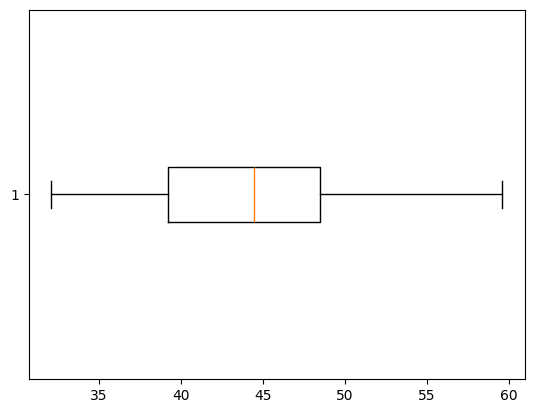
Bar Plot#
A bar plot can be used to summarize a single categorical variable. For example, if you want the counts of each unique category in a categorical feature.
### counts of species
penguins['species'].value_counts()
species
Adelie 152
Gentoo 124
Chinstrap 68
Name: count, dtype: int64
### barplot of counts
penguins['species'].value_counts().plot(kind = 'barh')
penguins.plot(
<Axes: ylabel='species'>
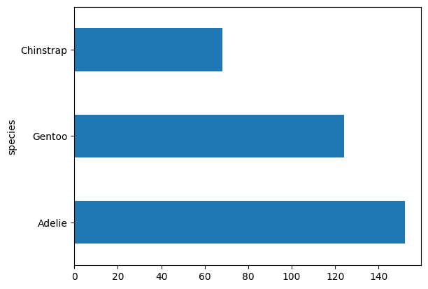
Two Variable Plots#
penguins.head(2)
| species | island | bill_length_mm | bill_depth_mm | flipper_length_mm | body_mass_g | sex | |
|---|---|---|---|---|---|---|---|
| 0 | Adelie | Torgersen | 39.1 | 18.7 | 181.0 | 3750.0 | Male |
| 1 | Adelie | Torgersen | 39.5 | 17.4 | 186.0 | 3800.0 | Female |
Scatterplot#
Two continuous features can be compared using scatterplots. Typically, one is interested in if a relationship between the features exists and the strength and direction of many datasets.
### bill length vs. bill depth
x = bill_length
y = penguins['bill_depth_mm']
### scatterplot of x vs. y
plt.scatter(x, y)
<matplotlib.collections.PathCollection at 0x1362c5670>
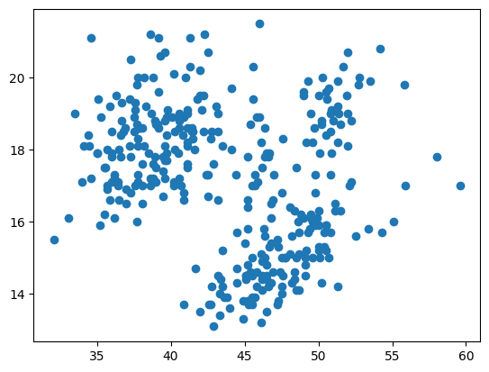
pandas.plotting#
There is not a quick easy plot in matplotlib to compare all numeric features in a dataset. Instead, pandas.plotting has a scatter_matrix function that serves a similar purpose.
from pandas.plotting import scatter_matrix
### scatter matrix of penguin data
scatter_matrix(penguins);
### adding arguments and changing size
scatter_matrix(penguins, diagonal = 'kde', figsize = (10, 10));
PROBLEMS
iris = sns.load_dataset('iris')
iris.head(2)
Problem 1: Histogram of petal_length
Problem 2: Scatter plot of sepal_length vs. sepal_width.
Problem 3: New column where
setosa -> blue
virginica -> green
versicolor -> orange
iris['colors'] = iris['species'].replace({'setosa': 'blue', 'virginica': 'green', 'versicolor': 'orange'})
Problem 4: Scatterplot of sepal_length vs petal_length colored by species.
Subplots and Axes#

### create a 1 row 2 column plot
### add a plot to each axis
fig, ax = plt.subplots(1, 2)
### create a 2 x 2 grid of plots
### add histogram to bottom right plot
fig, ax = plt.subplots(2, 2, figsize = (10, 8))
Summary#
Great job! We will get practice plotting in this weeks homework and examine some other libraries and approaches during class next week. For now, make sure you are familiar with the basic plots above – histogram, boxplot, bar plot, scatterplot – and when to use each.